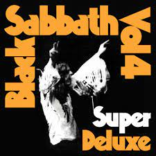
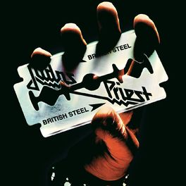
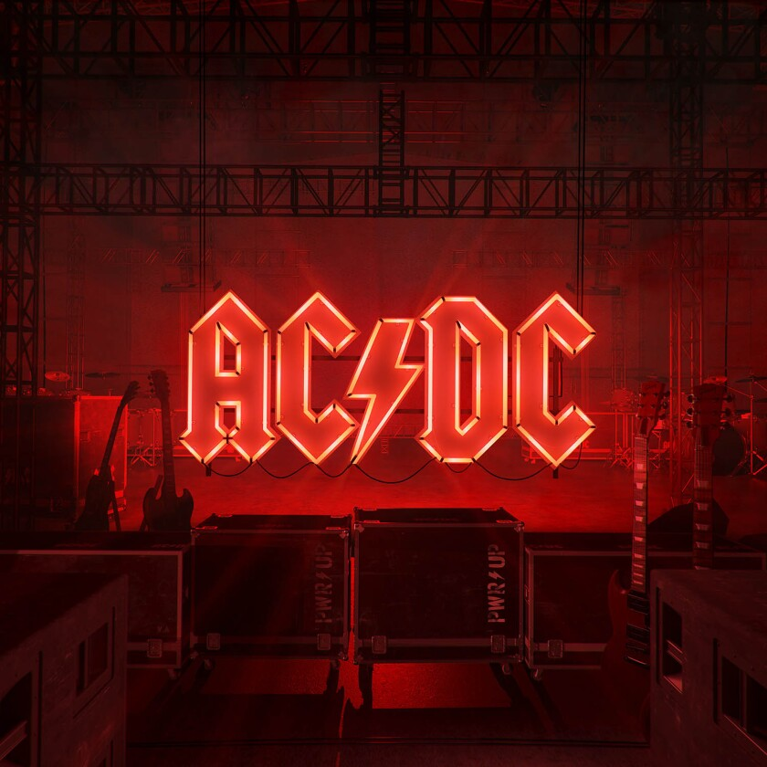
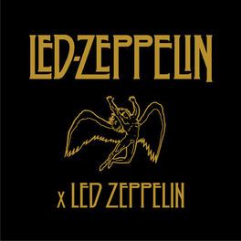
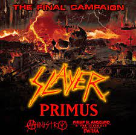
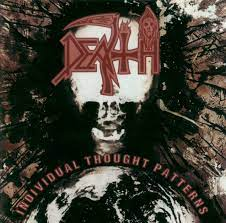
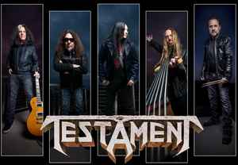

Generos conocidos
3 generos conocidos del rock y metal
Heavy Metal
Su sonido se caracteriza por ser más rápido y agresivo al metal clásico y al posterior glam metal, incrementando la distorsión de las guitarras y empleando técnicas como el scratching y el shred..
Hard Rock
Uso de letras agresivas con guitarras eléctricas distorsionadas, un bajo, batería y, en ocasiones, teclados.
Thrash Metal
Es un subgénero más agresivo del heavy metal tradicional que se caracteriza específicamente por sus ritmos pesados similares al metal extremo, NWOBHM, speed metal, biker metal y hardcore punk en agresividad y contundencia.
Generos
Algunos generos muy conocidos del rock y metal
- Todos
- Hard Rock
- Heavy Metal
- Thrash Metal

Iron Maiden

Black Sabbath

Judas Priest

AC/DC

Guns N' Roses

Led Zeppelin

Slayer

Death
